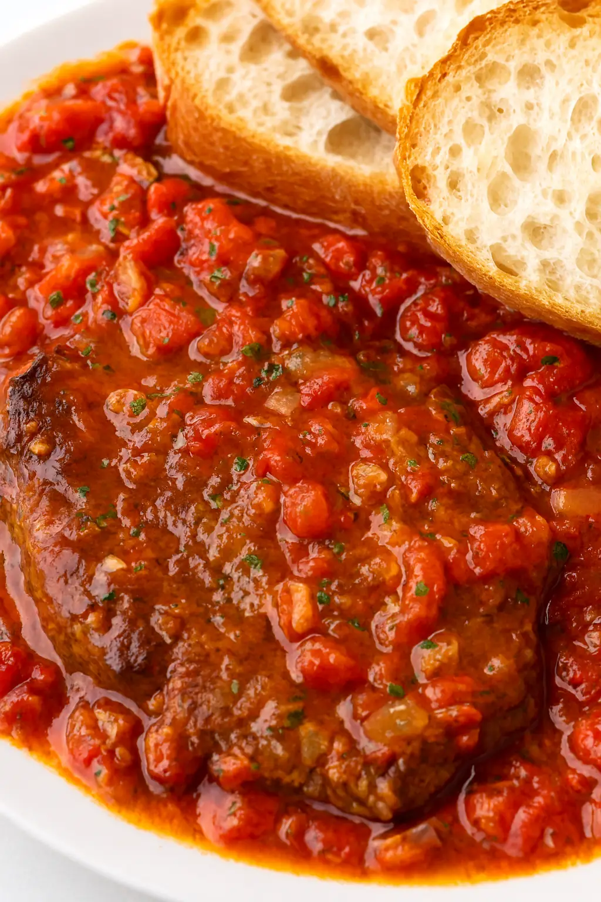

Italian Steak Pizzaiola

Description:
Steak pizzaiola, or carne alla pizzaiola, is a classic, rustic Neapolitan dish that features thinly cut steak braised in a flavorful tomato sauce seasoned with garlic and oregano. The name literally means "pizza-maker style meat," referring to the simple, traditional ingredients used in a basic pizza marinara sauce.
Ingredients:
Original recipe (1X) yields 4 servings
- 4 thin ribeye steaks
- 1 1/2 teaspoons kosher salt, divided
- 1 teaspoon freshly ground black pepper, divided
- 3 tablespoons extra virgin olive oil, divied
- 1/2 cup finely chopped onion
- 2 cloves garlic, minced
- 1/4 teaspoon crushed red pepper
- 1/2 cup white or red wine
- 8 roma tomatoes, chopped
- 1/2 teaspoon oregano
- 2 tablespoons tomato paste
- 1/4 cup sliced olives
- 2 tablespoons finely chopped parsley
Steps:
- Season steaks with 1 teaspoon salt and 1/2 teaspoon pepper. Heat 1 tablespoon oil in a large deep skillet over high heat. Add steaks to skillet and cook, undisturbed, until browned about 2 minutes. Flip and cook 1 more minute. Remove steaks from skillet and set aside.
- Add remaining oil to skillet and turn heat to medium. Add onions, remaining salt and pepper, and cook, stirring occasionally until softened. Add garlic and cook for 1 minute. Add wine and scrape bottom of skillet to loosen any browned bits. Add tomatoes and oregano and bring mixture to a simmer. Simmer until tomatoes soften, about 5 minutes, stirring occasionally.
- Return steaks and any juices accumulated to the skillet and cover the steaks in the tomato mixture. Cook until the steak is heated through, 2 to 3 minutes. Remove from heat and add parsley. Serve with crusty bread or over pasta or rice.
Home